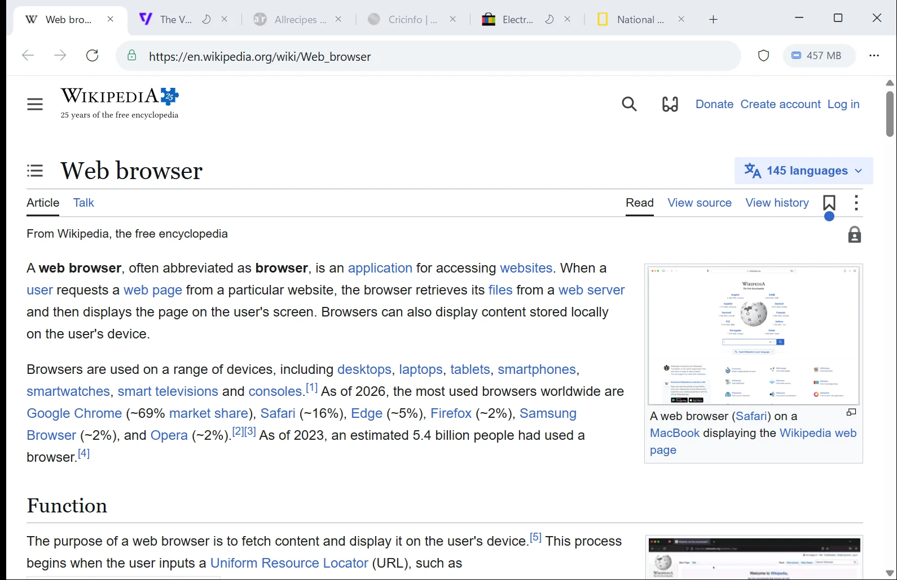
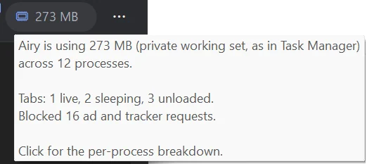
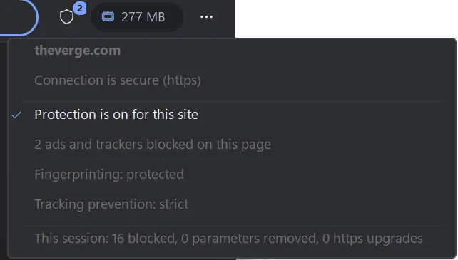
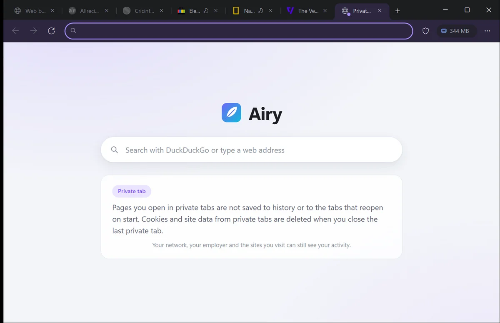
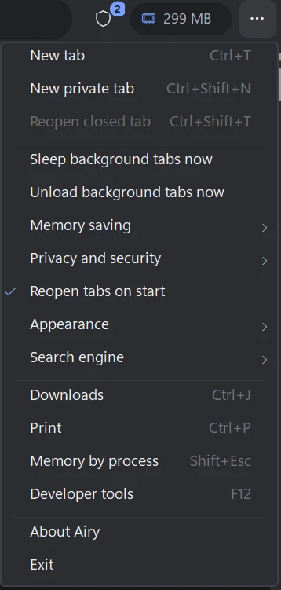

Free browser for Windows 10 and 11
Eight tabs in 777 MB. Chrome used 2,043 MB.
Airy runs on the same Chromium engine as Chrome and Edge, so your sites work the same. Background tabs go to sleep after 30 seconds, and ads and trackers are blocked by default.
- Free, MIT License
- No account
- No telemetry
- No admin rights to install

Memory test
The same eight tabs in each browser
Chrome keeps most background tabs running. Edge puts them to sleep after 15 minutes. Airy puts them to sleep after 30 seconds and unloads them after 10 minutes.
How this was measured
Eight live tabs in each browser: Wikipedia, GitHub, BBC News, eBay, Stack Overflow, YouTube, The Verge and CNN. Chrome and Edge started with fresh profiles. Memory is the Task Manager Memory column for each browser's whole process tree, read after 40 seconds of loading and then 60 seconds idle, on Windows 11. Extension processes are not counted, since Airy has no extensions. Two runs on 13 November 2026, averaged. With tab saving off, Airy uses about what Edge uses, so the saving comes from how tabs are managed. Over a long session the gap to Edge narrows. Results vary with the sites and the PC.
| Browser | Run 1 (MB) | Run 2 (MB) | Average (MB) |
|---|---|---|---|
| Chrome 157 | 2,094 | 1,991 | 2,043 |
| Edge 157 | 1,429 | 1,490 | 1,460 |
| Airy | 752 | 801 | 777 |
| Airy, tab saving off | 1,391 | 1,476 | 1,434 |
Tab sleep
What happens to a background tab
- 1
Live the tab you are on
Full page in memory. A tab you left less than 30 seconds ago is still live.
- 2
Sleeping after 30 seconds
Frozen: no scripts, timers or drawing, and the engine is asked to trim its memory. Click the tab to wake it.
- 3
Unloaded after 10 minutes
After 10 minutes in the background, or once more than four tabs are in memory. Only the title, icon and address are kept; click it and the page loads again.
Tabs playing audio, tabs still loading and tabs you mark "Keep this tab awake" are never touched.

The toolbar shows Airy's memory use, the same number Task Manager shows. Hover for the tab breakdown; click for each process.
Private by default
Protection that is on from the start
Every protection below is on when you first open Airy. The shield button shows what was blocked on each page.

- Ads and trackers blocked138 ad and tracking domains blocked, on top of the engine's strict tracking prevention.
- Third-party cookies offSites other than the one in the address bar cannot set cookies.
- https by defaultPlain http links open over https. If a site has no https, Airy asks before going unencrypted.
- Tracking codes strippedutm_, fbclid, gclid and similar are removed from links before the page loads.
- Tracking redirects skippedLink shims from Google, Facebook, YouTube, Reddit and LinkedIn are bypassed, so you go straight to the real site.
- Fingerprinting noiseCanvas, WebGL and audio reads get small per-site noise, and device details are generalised.
- Global Privacy ControlTells every site not to sell or share your data.
- Local IP address hiddenWebRTC does not expose your local IP address to pages.
- No telemetryAiry sends no usage data and needs no account. Search defaults to DuckDuckGo.
- Clear on exitOptional: wipe cookies, cache and history every time Airy closes.

Private tabs have a violet frame
Ctrl+Shift+N opens a separate in-memory profile. No history, no saved session, and its cookies are deleted when you close the last private tab.
Side by side
Airy, Chrome and Edge compared
| Feature | Airy 1.0 | Chrome | Edge |
|---|---|---|---|
| Memory, 8 busy tabs after 60 s idle | 777 MB | 2,043 MB | 1,460 MB |
| Background tabs sleep | After 30 seconds | Memory Saver, on Chrome's own timing | After 15 minutes (default) |
| Engine | Chromium (Edge WebView2) | Chromium | Chromium |
| Ad blocking built in, on by default | Yes | No | No |
| Tracking codes removed from links | Yes | No | No |
| Fingerprinting noise | Yes | No | No |
| Global Privacy Control | On | No | No |
| Account or sign-in | None | Optional | Optional |
| Extensions | Not yet | Yes | Yes |
| Sync across devices | No | Yes | Yes |
| Import bookmarks and passwords | Not yet | Yes | Yes |
| Runs on | Windows 10 and 11 | Windows, Mac, Linux, phones | Windows, Mac, Linux, phones |
| Price | Free | Free | Free |
Chrome and Edge are described with their default settings. Airy's blocklist is a fixed list of 138 domains; Brave and blocker extensions use much larger filter lists that catch more. An unloaded tab reloads its page, so text typed into a form on that page is lost, the same as with Chrome's Memory Saver.
Everyday use
Works like Chrome and Edge
- Tabs in the title barLike Chrome and Edge, with Windows 11 Snap Layouts on the maximize button.
- Light and darkFollows your Windows theme, and sites get the same setting. You can also pick one under Appearance.
- The shortcuts you knowCtrl+T, Ctrl+W, Ctrl+Shift+T, Ctrl+L, Ctrl+Tab, F11 and the rest.
- Your tabs come backAiry reopens your tabs when it starts.
- Downloads, print, dev toolsThe engine's own, the same as in Edge.
- One windowLinks you open from other apps land as a new tab in the window you already have open.

Download Airy 1.0
Version 1.0.0. Free, for Windows 10 (version 1903 or later) and Windows 11, 64-bit.
The .NET runtime is included. Airy uses the Microsoft Edge WebView2 Runtime, which Windows 11 includes and most Windows 10 PCs already have; setup links to Microsoft's installer if it is missing.
Airy is not code-signed yet, so Windows SmartScreen may say "Windows protected your PC". Choose More info, then Run anyway. You can check the files against SHA256SUMS.txt.
Installer
AirySetup-1.0.0.exe, 46 MB. Installs for your account only, adds a Start menu entry, lists Airy under Default apps, and removes cleanly from Settings.
DownloadPortable
Airy-1.0.0-win-x64.zip, 46 MB. Extract anywhere and run Airy\Airy.exe. Nothing is installed; your data stays in the folder.
Download zipTo make Airy your default browser, open Settings, Apps, Default apps and choose Airy. Windows lets only you change it, so setup never does. Silent install: AirySetup-1.0.0.exe /S. All versions: release page.
FAQ
Common questions
Will my sites work?
Yes. Airy draws pages with Microsoft Edge WebView2, the same Chromium engine that runs Edge, and Windows keeps it up to date. Sites that work in Chrome and Edge work in Airy.
What happens to a sleeping tab?
It is frozen in place: no scripts, timers or video run until you click it. After 10 minutes in the background it is unloaded, and clicking it loads the page again. You can change both times under Memory saving, or mark a tab "Keep this tab awake".
Why does Windows warn me about the download?
SmartScreen warns about new apps that are not code-signed. Airy is not signed yet. Choose More info, then Run anyway, and compare the file with SHA256SUMS.txt if you want to be sure it is the original.
Does Airy collect anything?
No. Airy has no telemetry, no account and no servers. The WebView2 engine's own diagnostic data follows your Windows privacy settings.
Where is my data kept?
Installed: %LOCALAPPDATA%\Airy, kept when you update. Portable: an AiryData folder next to Airy.exe. Uninstalling asks whether to delete it.
Can I bring my bookmarks and extensions?
Not in 1.0. Airy starts with a fresh profile and does not run Chrome extensions. Passwords and autofill you save in Airy are kept by the engine.
How do I remove it?
Settings, Apps, Installed apps, Airy, Uninstall. Or run Uninstall.exe /S from the install folder.